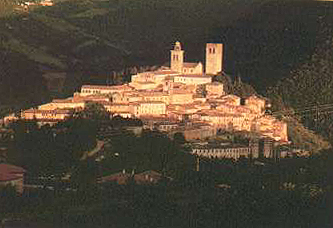
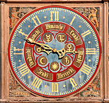
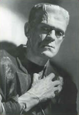
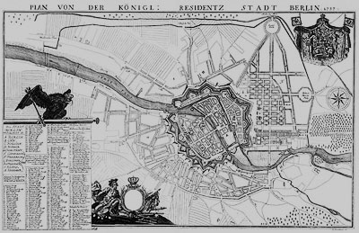
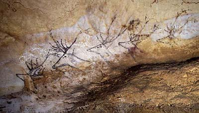

|
|
Navig.
page/section


_____
|
|
Pages soeurs
I, A propos des liants
II, Bulles, siccativ., struct. élec.
III, Caséine, phosphore, dissociation
IV, Les orbitales
V, L'aérogel
VI, Polarisation de la lumière
VII, Sfumato et diffusion Rayleigh
VIII, Les interférentielles
IX, Dextrine, farine et chiralité
X, L'ocre bleue
XI, Les métamatériaux
XII, Le jaunissement
XIII, Laser etc.
XIV, L'holographie
XV, L'holographie numérique
XVI, Extérieur, intérieur, chaux
XVII, L'électrolyse et les ions
XVIII, L'électricité, un peu plus loin
XIX, Oxydation, métaux
XX, Les échelles
XXI, Nature et évolution des résines
XXII, Le mouillage pigmentaire
XXIII, La molette
XXIV, Blanche neige
XXV, Lumière et matière
XXVI, Magnétisme
XXVII, Ambre et vieilles branches
XXVIII, L'origami miroir
XXIX, Le feu
XXX, Peau du métal
XXXI, La ville en un souffle
XXXII, Oxyder des matériaux
XXXIII, Ocre bleue, une solution
_____
|
Copyright © www.dotapea.com
Tous droits réservés.
Précisions cliquer ici
|
|
| |
|
|
Les
dialogues sur la physique-chimie
appliquée
aux arts
Chapitre
X
L'ocre bleue
Un bleu de Prusse plus naturel ?
De Berlin à l'Italie centrale,
enquête sur d'étranges sfumatos bleutés
|
 |
dial dial
dial
Ce chapitre des
Dialogues de Dotapea
est
une discussion entre Jean-Louis, physico-chimiste au CNRS, et un
candide, Emmanuel.
Les personnages sont réels, la
discussion aussi. Elle peut reprendre à tout moment et ce texte peut s'allonger.
Cette page restitue l'histoire d'une enquête qui n'est pas tout à fait terminée.
Elle peut donc s'enrichir de vos témoignages, de vos informations... et des
nôtres.
|
Emmanuel :
Cette histoire commence lorsqu'une étudiante laisse un mail dans l'ancienne boîte au
lettre "Technique des arts plastiques" de Dotapea. Elle s'intéresse à une
très curieuse couleur : le bleu du peintre Jean Degottex. En fait non,
l'enquête commence avant : différents auteurs abordent le sujet d'une
« terre de Sienne » rendue bleue par une manipulation mal décrite (à ce
sujet, lire "La légende du bleu", un
passage de l'article
consacré aux terres de Sienne).
Caroline, cette étudiante, fait
donc rebondir l'affaire en apportant quelques précisions :
|
|
Une
vieille histoire
|
|
Jean
Degottex aurait acheté des "ocres de Roussillon", c'est-à-dire de
Okhrâ, qu'il appliquait en
sous-couche.
Par-dessus,
il posait semble-t-il un "blanc d'ombre". J'ai fini par comprendre qu'il
s'agissait
vraisemblablement du blanc de Nocera Umbra, une ravissante bourgade
située en Ombrie, en Italie (cliquer ici pour une
image satellite).

Il se
fournissait chez un détaillant du XIVème arrondissement de
Paris. Je m'y suis rendu. Les gérants ont changé. Aucune donnée n'a
pu être obtenue.
Concernant
le blanc, j'ai demandé des informations auprès de la mairie de Nocera,
en vain.
"L'enquête piétinait",
lirait-on dans un roman policier. Oui, mais pas à tout point de vue.
|
|
Un
mystérieux pigment : le blanc d'ombre
Note : Nocera Umbra
produirait également une "terre d'ombre" apparentée en fait à une
terre de Cassel (lignite), donc
un pigment pratiquement noir.
(informations
F. Perego) |
|
En effet on a pu
déterminer que selon une forte probabilité, ce blanc semble être une
argile blanche que l'on trouve notamment dans la rivière ou les sources
de la région et qu'elle est censée posséder des vertus curatives connues
depuis l'Antiquité. Il y a des thermes sur place actuellement.
Ce blanc
est également utilisé de nos jours en cosmétique. C'est un produit
industriel.

Par
ailleurs, Degottex aurait surtout peint à l'huile, mais était-ce
bien le liant qu'il utilisait pour obtenir ce bleu ? Mystère. Il
obtenait quelque chose qui ressemblait à l'image ci-contre (un simple
détail pour donner une idée des couleurs obtenues, sortes de sfumatos
bleutés).
De l'Ombrie
jusqu'à Naples, de nombreux éléments atomiques et combinaisons
moléculaires assez inhabituels se trouvent en
surface car c'est une région géologiquement active (voir par exemple
Le jaune de Naples) où les
"remontées" ne sont pas rares.
Voilà donc
les éléments initiaux de cette enquête.
Ce
bleuissement inattendu évoque l'histoire du
bleu de Berlin (ou de
Prusse) dont voici à peu près la teinte "standard" :

Citation de
Pourpre.com
On aurait
bien vite fait de conclure que c'est le même phénomène qui permet de
réaliser un bleu de Prusse que celui qui crée le
bleuissement visible sur les toiles de Degottex. C'est
d'autant plus intéressant que si c'était
réellement le même, les inventeurs du bleu de Prusse n'auraient fait que reproduire une
manipulation qui était peut-être déjà connue par les Étrusques ou les
Romains.
|
|
Une
argile utilisée de l'Antiquité à l'âge industriel |
|
Jean-Louis : Les terres rouges contiennent
généralement du fer, sous forme d'oxydes. Mais les terres blanches, ce
n'est pas vraiment du cyanure, surtout si c'est réputé avoir des vertus
thérapeutiques !... Alors pour faire un bleu de Prusse, je ne vois
pas...
Emmanuel : Oui, c'est étrange. Sur le fond,
on n'a rien compris à cette manip.
[A ce stade du dialogue,
un peu de temps passe, à Strasbourg...

... et à Paris.
L'enquête, à nouveau,
tourne en rond.
|
|
Un
cyanure cosmétique ? |
|
Jean-Louis la fait
redémarrer en découvrant sur le réseau un document datant de 1833]
Lien vers ce document (format
Acrobat PDF)
(si ce lien ne
fonctionnait plus, merci de nous le signaler
car nous en avons
pris copie pour archive)
Jean-Louis : Apparemment c'est documenté :
sels de fer plus argile donnent bleu de Prusse.
Emmanuel : Donc l'ocre fournit le
fer, l'argile et la terre blanche fournissent
l'alumine. Qu'est-ce qui manque pour que cela vire au bleu ?
Apparemment un alcali comme la
potasse et puis un "charbon animal". Est-ce
que celui-ci peut fournir de l'osséine
et oxyder le tout ?
Jean-Louis : Le bleu de Prusse est un
cyanure de fer, donc il faut du fer dans deux
états d'oxydation différents, du carbone et de l'azote. Je me demande
d'ou vient l'azote [note : l'azote du cyanure]...
C'est pas la potasse, donc il reste le noir animal. Ca tombe bien, c'est
organique, donc il y peut y avoir de l'azote. Mais j'aurais cru que la
calcination ne laissait que du carbone. Connaît-on la composition même
approximative du noir animal...?
Emmanuel : Je ne l'ai pas. C'est
Xavier de Langlais qui en parle. Je
n'ai rien trouvé sur le Perego ni sur le
Béguin ni sur le
Delcroix/Havel, pourtant je peux
confirmer que cela existe et qu'un fournisseur célèbre en vendait encore
il y a quelques années.
Le blanc d'ombre était-il oxydant ? Alcalin ?
Jean-Louis : Il semble paré d'un tas de
vertus médicinales et cosmétiques, je doute qu'il ait des propriétés
d'alcali. Ou alors gare à la peau qui tombe en plaques!
Emmanuel : Pourtant ce blanc semble être la
clé de cette histoire. Ca ne marcherait pas avec du zinc ou du titane.
L'oxydant,
dans le cas de la fabrication du bleu de Prusse, semble (cf.
document ci-dessus) avoir été un
« charbon animal ». A une certaine époque, on disait que le fameux
noir d'ivoire était trop siccatif
pour la peinture à l'huile. En fait il est possible qu'il ait simplement
été mal calciné. Du coup il aurait effectivement été oxydant et donc
siccatif, comme le "noir animal".
En posant l'hypothèse que le rôle de la perlasse (cf. document
précité) est d'oxyder l'ensemble tout en
apportant un alcali, on peut imaginer soit que l'on trouve l'équivalent
dans le fameux blanc d'ombre, soit que cette terre blanche contient
juste un alcali et que Degottex mettait une certaine quantité de siccatif dans sa
peinture. Ou, à l'inverse, que la terre ne soit ni alcaline, ni oxydante
et que le secret réside dans l'ajout pur et simple d'un alcali et d'un
oxydant.
|
|
Le
bleu de Prusse "à l'ancienne" |
|
Revenons à
la genèse du bleu de Prusse, au début du XVIIIème siècle.
Elle est liée à un personnage, Dippel, qui n'a pas toujours été bien jugé par
beaucoup d'auteurs, à tort ou à raison.
Commençons
par la version la plus polémique de cette histoire. Elle proviendrait
(sous toute réserve) de Pastoureau ou de Delamarre et des Guineau. J'ai
pu retrouver un compte-rendu :
lien sur le site PaintCafé.
Des accusations très dures dont on aimerait pouvoir connaître les
arguments concrets. Dans la même catégorie sensiblement, on trouve un
texte
sur Wikipedia (lien).
Amusant : Dippel serait né au château Frankenstein - inspirant Mary
Shelley - et mort au château Wittgenstein - cela a-t-il inspiré le
philosophe ? -, ça ne s'invente pas ! Ceci
dit, cet article comme d'autres semble faire la part belle à la légende.
S'agissait-il bien d'un "alchimiste" ou d'un "professeur Frankenstein"
alors qu'il vivait au siècle des Lumières et non au Moyen-âge ni à
l'époque moderne ?

Surtout,
des auteurs aussi rigoureux que Perego ou Béguin ne sont absolument pas aussi affirmatifs
concernant l'influence de la personnalité de Dippel dans la découverte
du bleu de Prusse. Quant à de Langlais ou Delcroix et Havel, ils ne
parlent pas du tout de l'aspect historique malheureusement. Le texte de Béguin m'a
semblé le plus fin, le moins péremptoire et il a l'avantage d'être
compatible avec les autres versions. En voici un extrait.
Il commence
par une citation du Traité sur les vernis de Tingry :
« La découverte du bleu de Prusse "est due, comme beaucoup d'autres,
à un heureux effet du hasard. Dippel, chimiste de Berlin, ayant jeté
dans sa cour plusieurs liqueurs dont il ne devoit plus faire usage, ou
enfin pour débarrasser son laboratoire, vit, avec surprise, que quelques
uns des pavés étoient recouverts d'un bleu très éclatant.
Il se rappela d'avoir jeté précédemment à la
même place des résidus de solution de sulfate de fer (de vitriol de
Mars, de vitriol vert) ; et comme les liqueurs dont il venoit de se débarrasser étoient de nature
alcaline, et avoient servi aux rectifications répétées de l'huile de
corne de cerf, il crut trouver la clef d'une découverte qui lui parut
précieuse. Il dirigea donc ses recherches dans ce but et il parvint,
après quelques expériences heureuses, à composer le bleu de Prusse par
un procédé sûr."
|
|
Controverses sur l'aventure légendaire de la genèse du bleu de Prusse |
|
On a
donné une autre version de cette découverte faite "en 1720, par
Diesbach, de Berlin, puis étudiée depuis par beaucoup de chimistes sous
le rapport théorique, et par un grand nombre d'industriels sous celui de
la fabrication." (Riffaut, etc.).
"En
1710, Diesbach, fabricant de couleurs à Berlin, préparait de la
laque de
cochenille. Il prit une solution d'alun (qui était un peu ferrugineuse).
En ajoutant la décoction de cochenille et faisant chauffer, il se forme
en pareil cas un précipité rouge (sulfate d'alumine basique retenant la
matière colorante de la cochenille). Mais en saturant l'alun par le
carbonate de potasse, Diesbach obtint un beau précipité bleu ; c'était
le bleu de Prusse." D'après Guignet, l'auteur de ces lignes, Diesbach
fit part à Dippel, qui lui vendait la potasse, de ses observations et
c'est ensemble qu'ils auraient mis le bleu de Prusse au point, mais sans
faire savoir, cependant, leur procédé.»
Que
s'est-il passé sur les pavés de Berlin en ce début de XVIIIème siècle ?

|
|
Une
élaboration en commun ? |
|
Difficile à
dire. Derrière
tout cela, je repense aux propos de
Anne Varichon sur le fait que les découvertes sont le fruit d'un
travail de recherche plus que de hasards contrairement à ce que l'on
entend partout. Si vraiment Dippel s'est aperçu que ses pavés avaient
bleui, c'est a minima qu'il avait l'oeil, sinon c'est qu'il a cherché à
susciter des réactions comme celle-là. C'est pareil avec Guimet et
Vauquelin. Si Vauquelin n'avait pas vu du bleu sur les électrodes des fours de verriers, il n'y
aurait peut-être pas de bleu outremer. Même chose avec Acheson pour le
carborundum. Le
rôle du hasard est trop, beaucoup trop mis en exergue, cela ne rend pas
justice au sens de l'observation des chercheurs.
Jean-Louis : Oui, on parle souvent du
hasard dans les découvertes, mais en règle générale, il faut quand même
très souvent quelqu'un qui était en train de chercher dans cette
direction ou qui avait le matériel de mesure à portée de main.
|
|
Chance et romantisme ou bien recherches et science ? |
|

Emmanuel : Je ne peux pas m'en empêcher, je
repense à cet emploi de l'huile de corne de cerf (ou de "bois" de cerf) par Dippel dans l'une
des hypothèses de Béguin. Sur un texte de l'université Paris V, assez
amusant à cause des S/F à l'ancienne, il est question de l'alcalinité de
certaines huiles animales :
lien
Un autre texte (que l'on appréciera en toute liberté)
hdelboy.club.fr/reincrud.htm, évoque la présence de "potasse de
chaux" dans l'huile de bois de cerf. Des indices.
L'alcali est peut-être là, dans l'huile (et si Dippel l'a utilisée,
pourquoi pas Degottex), et possiblement l'oxydant puisque c'est de l'os,
enfin à peu près, plus ou moins. Alors le rôle de ce blanc très
particulier ? Mystère, décidément.
Jean-Louis : L'huile qui sent l'ammoniaque,
pourquoi pas, mais cette huile n'est pas
censée intervenir lors de la synthèse du bleu de Prusse.
Emmanuel : Sur la version initiale, ça pose question. On
ne sait pas.
Mais on sait quand même que Dippel utilisait cette huile de cerf.
Enfin quand je dis "on sait", rien de sûr.
Jean-Louis : La synthèse du bleu de
Prusse se fait en milieu aqueux, donc toute huile posera
problème, même si elle contient des "principes actifs". Hétérogénéité du
milieu réactionnel, séparation de phase, récupération finale du produit
gras. On sait faire des synthèses en milieu hétérogène, mais après ce n'est
pas toujours facile d'extraire le produit final : lyophilisation,
passage
par des solvants, etc etc., toutes techniques plutôt modernes.
Je ne pense
pas que la synthèse puisse se faire sur la toile, par réaction entre les
terres, le noir, et l'huile. Ca me parait beaucoup espérer, et qu'en plus ça
soit homogène, que ça sèche et tienne sur la toile et ne brûle pas tout,
un miracle!
Emmanuel : Degottex a dû réduire le problème pour que
cela marche aussi bien.
Le blanc a sûrement joué un rôle. Cela paraît
improbable qu'il l'ait pioché au hasard.
|
|
Le
rôle du cerf |
|
Cet article se poursuit (et le mystère est
éclairci) dans le chapitre XXXIII.
 Lien
direct. Lien
direct.
Chapitre suivant :
XI, Les métamatériaux |
Retour
début de page
|
|

 Communication
Communication


|
|